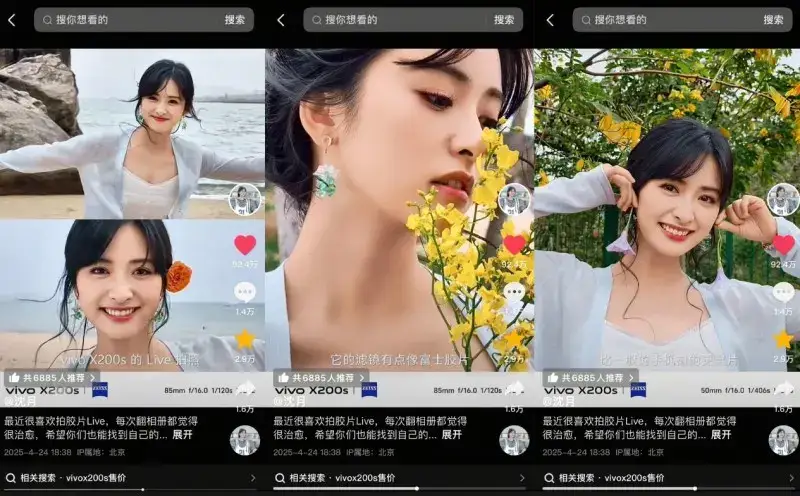
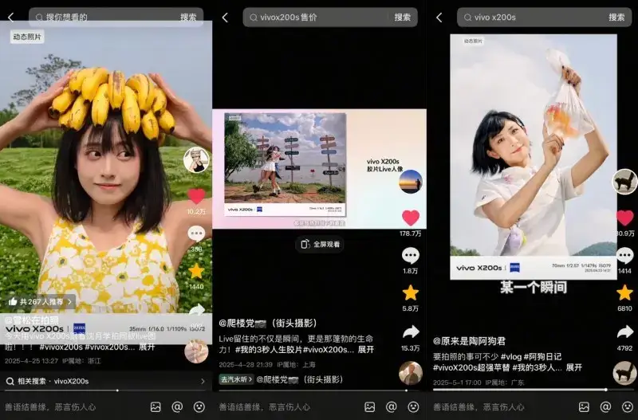
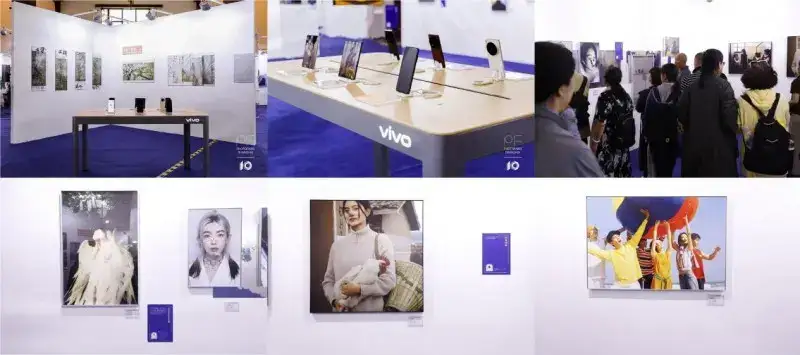
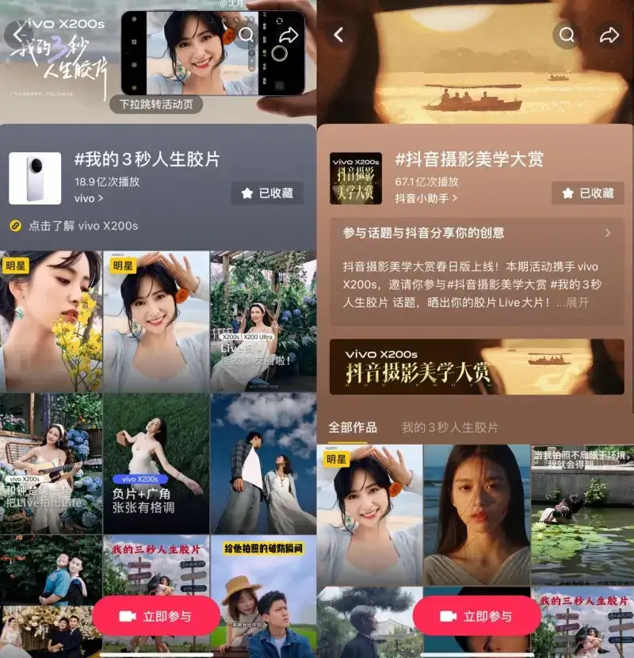

From recording by all to creating by all, Douyin is opening a new era of photography for everyone.
As the smartphone lens becomes a recording partner that modern people carry, and short-video platforms become a digital canvas for people to express themselves, the art of photography, once held by professional gear and technique, is going through an unprecedented change toward the public.
The daily time users spend on short video keeps growing, and recording life and sharing aesthetics have become the creative drive of many users. As the largest short-video platform in China, Douyin spotted this trend. In April 2025 it launched the topic project Douyin Photography Aesthetics Awards, and together with the vivo X200 series it built an imaging festival that runs online and offline, and connects ordinary people with photographic artists.
This is not an exhibition for an elite. It is more like a creation festival for all. Unlike the academic walls of a traditional photo show, this event uses wild photographers as its main story, and focuses on the real world that ordinary people catch with a phone lens. Whether it is plants and animals in nature, rural style in the fields and villages, or the many faces of the morning subway, each can find its own audience in the traffic ecosystem of Douyin. The vivo X200 series, as an imaging flagship phone, gives this all-people creation movement the best brush, through its strong lens module and breakthrough imaging algorithms. Its new film-style Live Portrait feature has also set off a wave of people shooting along.
1. Online build-up: Shen Yue's announcement plus a creator matrix, forming a 3-second-to-blockbuster chain
On April 24, the young actress Shen Yue released a 3-minute-05-second short film called My 3-Second Life Film. Her fresh, natural image as a photography lover fits the vivo X200s well. As a young woman who loves to record life with a lens, Shen Yue chose the park-effect scenes popular among young people today: a park at a city corner, a tree-lined path, and a meadow in spring bloom. Using the film-style Live Portrait of the vivo X200s, she catches the play of light on the leaves in the wind, the trail of falling petals, and the relaxed moments when the people and things of the park heal her.
Speaking of the shoot, Shen Yue said: Lately I really like using the film-style Live Portrait of the vivo X200s. The low-saturation Fuji-film tone has a built-in premium feel, and the portrait algorithm makes every frame good, so it gets better results than the Live of a normal phone. Even in an everyday place like a park, it gives a cinematic mood and records a lively energy. Within 24 hours of release, the short was played more than 100 million times. The related topics #Want the same Live as Shen Yue and #My3SecondLifeFilm reached the Douyin hot list, and related discussion on Weibo, Xiaohongshu, and other outside platforms passed 10,000. The star effect brought product exposure and turned into traffic that drew user interest.

At the same time, Douyin built a creator matrix. Top photographers build professional trust, new creators define young aesthetics, and ordinary creators spark emotional resonance. This further opened the voice for the topic to spread beyond its circle. It invited 13 quality creators of different styles, such as Xuesong Zaipaizhao, Paulwalker (street photography), Originally Tao A Goujun, Ye Ju, and Li Mo, to form an Aesthetics Spread Alliance, and reach different user groups with varied content.
Technical creators deepen professional understanding. Xuesong Zaipaizhao, who is good at film photography, released I Want the Same Film Live as Shen Yue. He broke down in detail how the negative filter, unique to the vivo X200s, simulates the color of film, and combined a spring-limited composition mode with a Live demo in a park. The single video reached 100,000 likes, and the comments were filled with notes such as So a phone can also get a film look and I am sold on the film Live Portrait feature.
In Live Keeps Not Only a Moment, but Also That Lively Energy, by the photographer Paulwalker (street photography), he used the film-style Live Portrait of the vivo X200s to catch, on the street, moments full of life: people running, laughing, and meeting. Its Fuji-film low-saturation tone and its dynamic recording that adds 3 seconds of life beyond a photo freeze the moment clearly in the phone lens. Through a tap-to-share feature that works across ecosystems, he sends the Live to the person shot, and truly freezes a precious moment of life into an everlasting, unfading mark of energy.
In the vlog There Is No Shortage of Things to Shoot, @Originally Tao A Goujun used the vivo X200s to shoot moving Live photos on the lawn of Baiyun Mountain and in the zoo. Using the motion-portrait algorithm in portrait mode, he clearly caught big moves such as running and jumping. With the Fuji-film texture of the negative style, he showed the value of recording in sunny and rainy scenes, and showed how a Live photo seals energy through light and sound, and records a precious moment well.

As the creator content kept spreading, Douyin also launched the #DouyinPhotographyAwards public submission activity, and used zero-barrier creation to spark participation. Users only had to post quality photography or original image-text work with the official topic #DouyinPhotographyAwards, and show their own film-style Live shot, to share in a pool of a million in traffic. The simple rules quickly lit the creative urge of ordinary users. For a while, works such as the reflection of a coffee cup in the morning subway, a close-up of a shoemaker's toolbox at an alley, and the steam rising in a late-night convenience store filled the topic page. This content network, woven by stars, creators, and ordinary people, formed a spread of top professional backing, middle aesthetic leadership, and bottom-up sharing by all.
2. Offline landing: the Photofairs Shanghai show, watching the wild photography break out of its circle
From May 8 to 11, at the 10th Photofairs Shanghai, the Douyin Photography Awards special exhibition became one of the most noticed areas. The 20 photographers in the show had no professional photography-school background, and more than half had never taken part in an offline show. They are the wild photographers active on Douyin. Ding Yiran recorded a close view of an erupting volcano, where the orange-red lava and the deep blue sky make a strong visual impact. Li Qihang's series My Grandmother turns the working scenes of rural elders into fashion shots. Chu Weimin's Riding the Train to See China, polished over more than 20 train trips, became a satisfying body of work, and Tibet Seen Through the Train Window won the 2023 Hasselblad Masters Award. These works overturn the traditional definition of a blockbuster. Without expensive gear, they moved professional collectors through sharp observation of life and emotional force. On the first day, 7 works were collected by private collectors and art institutions. The curator Narisong said with feeling: This is a number we could not have imagined before. This is a new photography ecosystem.
The vivo X200 Series Experience Zone set up at the show also became a popular focus. Visitors could take a phone and, with the guidance of a professional photographer, shoot the works of the show. After they added a topic tag and uploaded to Douyin, they all received many likes. Tens of thousands of visitors joined during the event, and related check-in content added more than 1.2 million plays on Douyin. The show also drew international art institutions such as the Mika Ninagawa Studio and Visual China, and dozens of media, including Xinhua, VOGUE, and The Paper, reported in depth. On outside platforms such as Weibo and Zhihu, it also sparked public discussion, and truly formed a three-dimensional chain of art-world backing, mass-media spread, and second sharing on social platforms.
It is worth noting that the show also presented several works shot on vivo phones by masters such as Duan Yueheng, Xiao Quan, and Li Ge. The work of these three masters is deeply merged with the imaging technology of the vivo X200 series. It gives visitors a visual feast where art and technology meet, and confirms the industry trend that phone photography is reshaping the boundaries of professional creation.

3. Decoding the data: the new infrastructure of the imaging industry behind 6.58 billion plays
During the project, Douyin built a resource support system for photography creators that covers the whole creative cycle. Through the combined power of traffic incentives, business support, professional certification, and technical tools, it built a sustainable content ecosystem. While the topic spread, the photography creators who joined it all received a traffic boost, which helped their videos gain more heat. Among the platform's hit content, non-traditional aesthetic subjects, such as street life and family documentary, sparked more thought. Focusing on everyday scenes such as a fresh stall in a market, a clothesline in an urban village, a grandmother's wrinkles, and an old childhood home, these frames have no polish from professional gear, but through strong storytelling and emotional force they became the new traffic code. This trend resonates deeply with Douyin's tone that the real is the beautiful. Through its traffic support, the platform gives the everyday records of ordinary creators the same exposure as professional blockbusters. Fragmented narratives full of life are easier to relate to. In 15 seconds, a user can feel the warmth of a story through the details of the frame, with no need for complex technical analysis or the worship of gear.
The vivo brand, centered on technical innovation and on real use, deeply empowers the creative ecosystem. The X200 series, built for photography needs, keeps improving the image in portraits, landscapes, and other scenes, and in AI scene recognition, and it offers more varied styles to respond precisely to needs such as street photography and emotional record. In content co-creation, the spring edition of the Douyin Photography Awards joined the vivo X200s to launch a limited track. Posting a Live photo with both topics #My3SecondLifeFilm and #DouyinPhotographyAwards earns a DOU+ reward from Douyin. Posting a film-style Live video with a vivo watermark in the limited track also earns rewards from the brand, such as a phone and earphones.

The deep coordination between Douyin and vivo is, in essence, the fusion of a platform's traffic ecosystem with a brand's technical DNA. The first lowers the barrier to creation through resources, business incubation, and a certification system. The second, through hardware innovation, algorithm updates, and scene marketing, makes the phone lens a common tool for creation by all. Together they push photography for all from a concept into practice, and let technical power and emotional expression resonate in the age of short video.
Conclusion
As the shutter becomes the recorder of the times, this campaign is, for the vivo X200 series, not just simple product exposure, but also a passing on of a philosophy of photography. When the phone lens returns to the essence of recording life, the brand builds a deeper value link with the user. The rise in vivo's brand favor during the campaign confirms this again. The phone lens is gradually becoming people's imaging partner for recording life.
For Douyin, the Photography Aesthetics Awards let more people see that a short-video platform is not only a place for entertainment, but also fertile soil for cultural creation. When millions of users shoot their own life film with a phone lens, we see not only the success of a campaign, but also the quiet arrival of an era of images for all. Here, every ordinary person can direct their own life, and every press of the shutter is a gentle record of the times. We used to say that photography is the art of light. Now we understand that this light is not only the light before the lens, but also the love and curiosity that every person feels for the world.